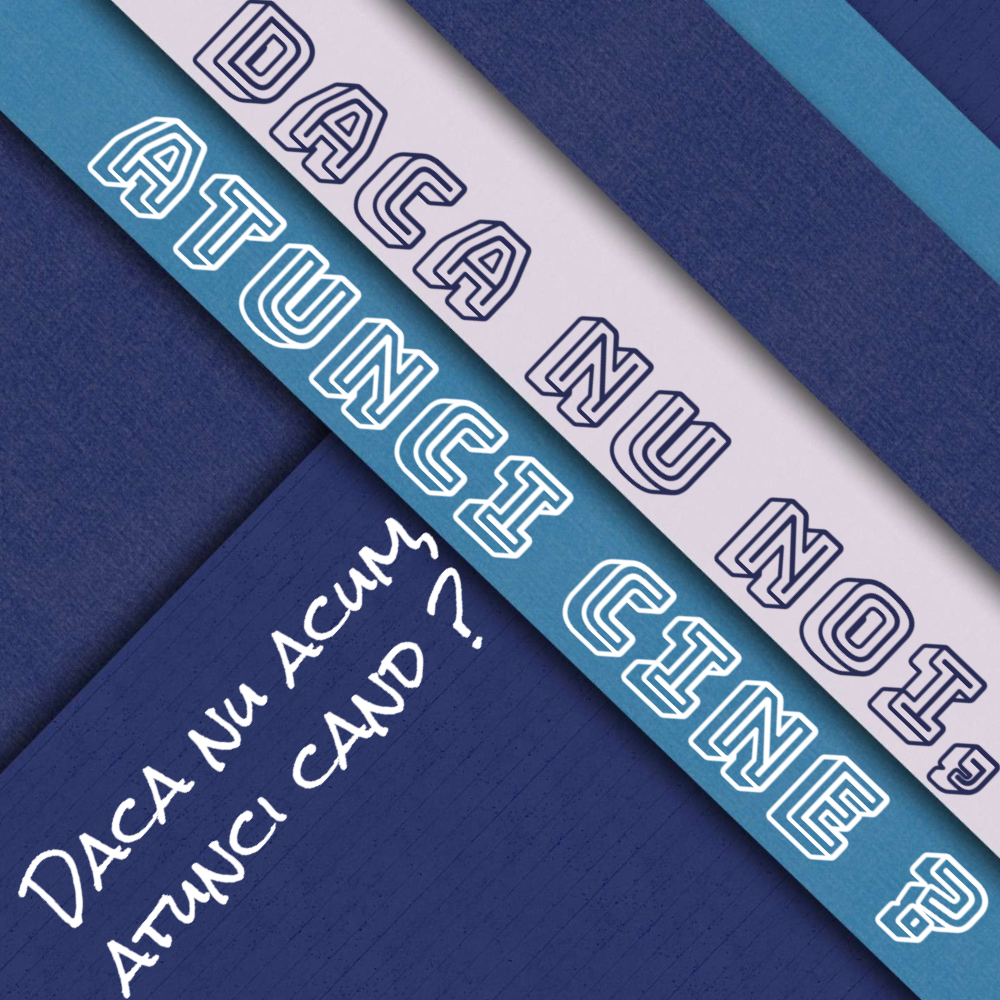
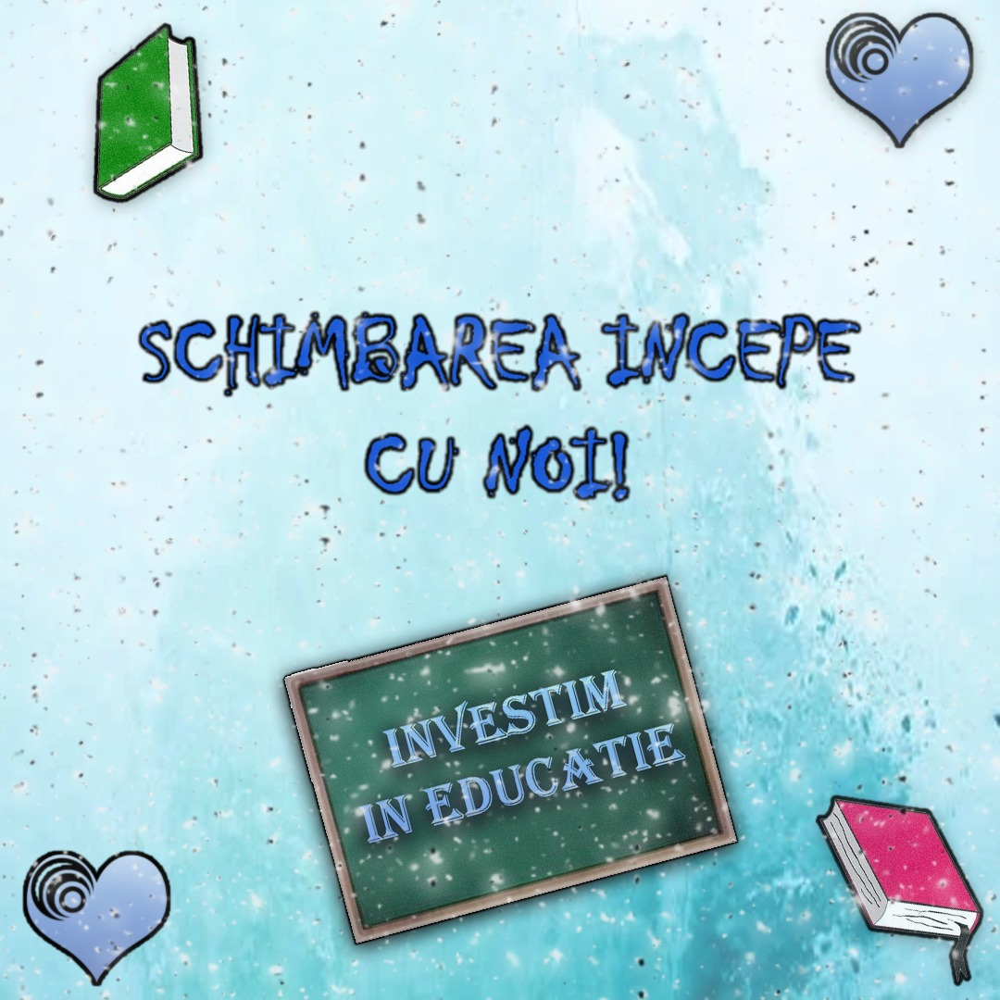

Una din cele mai importante calitati ale unei natiuni este educarea si pregatirea tinerilor, lucru ce in Romania este complet neglijat din cauza liderilor ce sunt mai preocupati de propriile interese decat de lucrurile ce conteaza cu adevarat. Din acest motiv s-a infiintat partidul Vocea Educatiei, scopul acestuia fiind unul clar: educarea generatiilor viitoare, tinerii din banci vor fi pregatiti sa infrunte neprevazutul, vor putea capata informatii ce i vor ajuta sa si implineasca visele. Acest partid a luat nastere prin initiativa a 7 personalitati pregatite sa lupte pentru educarea elevilor nevinovati din banci. Reprezentantul oficial al partidului este domnul Olteanu Adrian, antreprenor de succes ce doreste sa impartaseasca tuturor elevilor informatiile acumulate de-a lungul carierei. Partea de finantare a partidului va fi asigurata de domnii Matei Cosmin respectiv Bosinceanu Stefan, in trecut, acestia au ocupat functii importante ale partidelor rivale, observand astfel greselile acestora. Acestia vor accesa fonduri europene ce vor ajuta partidul sa pregateasca profesorii prin cursuri specializate, cat si prin inlocuirea demodatelor manuale. De partea administrativa se va ocupa doamna Gheorge Maria, absolventa a facultatii de drept din Canada. Domnul Dumitrescu Victor se va conforma dorintelor elevilor comunicand si creand diferite sondaje ce vor fi publicate chiar pe acest site. Educarea profesorilor are un rol foarte important in educarea elevilor, de aceea domnul Bogzoiu Radu va crea diferite ateliere in acest scop, ba mai mult domnul Bogzoiu si domnul Dumitrescu vor tine o stransa legatura pentru ca profesorii sa poata fi modelati pe placul elevilor.